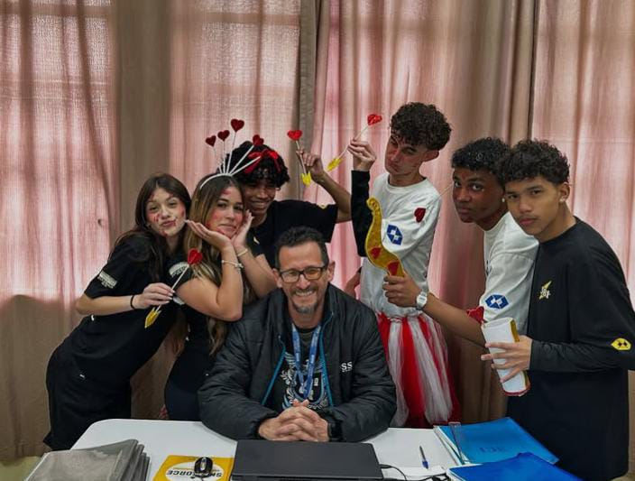
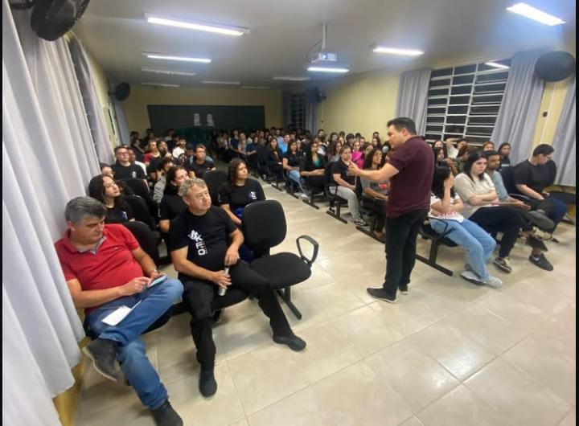

Sobre o curso
O curso de Administração forma profissionais capazes de planejar, organizar e gerenciar recursos humanos, financeiros e materiais em empresas públicas e privadas. Durante a formação, o estudante desenvolve competências em liderança, tomada de decisão, empreendedorismo e gestão estratégica. Com uma visão ampla dos processos organizacionais, o administrador pode atuar em diversas áreas, como finanças, marketing, recursos humanos, logística e gestão de projetos. É uma carreira versátil, com grande demanda no mercado de trabalho e fundamental para o desenvolvimento sustentável das organizações.

